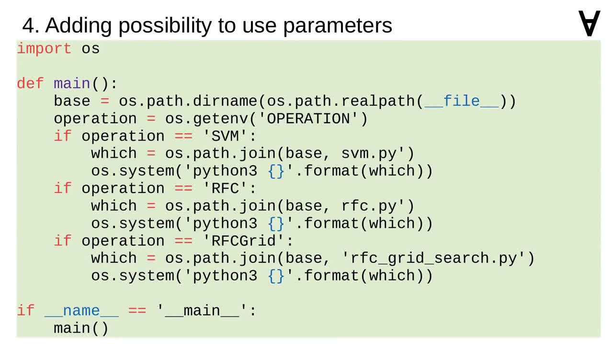
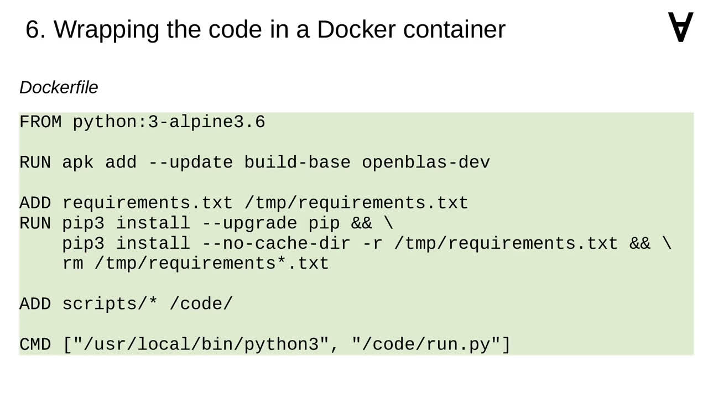
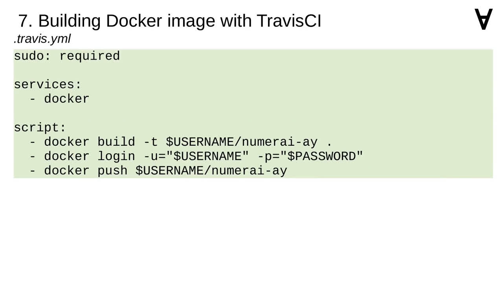

Numerai & ML - Part 2 - First models: Random Forests, Support Vector Machine, Logistic Regression, Gradient Boosting, Deep Neural Network
Looking for inspiration I came across the Tech in Pink blog where the author is giving a couple of examples.
In two posts the author demonstrates how to apply to this task the following learning methods: random forests, random forests with hyper-parameter grid search and support vector machine.
Since the time of publishing the format of the data changed to the one shown here. Therefore, I had to modify the code.
I added the code to extract the names of the feature columns.
The list of feature columns had to be applied to extracting of feature values from training data.
The name of the ID column also needed to be changed.
And the list of feature columns had to be applied to the prediction code as well.
Storing the predictions to disk also did not match the currently required format.
Thus, this had to be adjusted as well.
As it turns out, the submission process may fail if the probability is equal to 0 or 1.
Therefore, it was necessary to find out the granularity of the floating-point type.
...and clip the probabilities to an open interval from 0 to 1.
The code also raised a few deprecation warnings. In particular, the cross validation and grid search were moved to the model selection module.
There was also some obsolete Python 2 code which needed to be updated to Python 3.
To gain some flexibility I decided to replace the hard-coded file names by parameters obtained from environment variables...

...and to introduce a main script called run.py which allows me to select the learning method.
For some of the learning methods it is possible to use all CPU cores and in scikit-learn this can be enabled by setting n_jobs to -1.
It is not possible though for support vector machine classification.
To keep the code clean I decided to wrap the code in a Docker container. Therefore, I needed to prepare requirements.txt file with all the necessary modules...
...including NumPy and SciPy modules...
I also needed to create the Dockerfile.
Which uses Python 3 as the base image.
Then, it installs libraries for algebraic computation.
It also installs the Python modules listed earlier...
...as well as the Python scripts...

...and it calls the main run.py file when the container is executed.

To make sure the container is rebuilt whenever I make a modification I use the Travis CI.
...with a configurable user name and password.
Assuming the Docker is installed and you are in the directory which contains a Numerai dataset you can run the code like this.
This example command applies the SVM learning method but you can also use RFC and RFC-Grid.
Searching further I also found an interesting post on Fast ML blog where the author applies random forest and logistic regression learning methods with data transformers.
As a side-note, the author also has another blog entry explaining how the consistency admission criterion is calculated.
Same as before I needed to adjust the code for new data format and open probability interval, fix the deprecated code, add parameters, enable multi-core processing and wrap the code in a container built with the Travis CI.
Here is the command to run that container. Note that the container image name is different and that it offers only two learning methods - RFC and logistic regression.
Beside Googling for blog posts about Numerai I also searched GitHub directly.
That's how I found this repository published by the user Jeremy123W which applies gradient boosting and deep neural network learning methods.
I went through the same steps here as well. With the exception of applying multi-core processing - the code was running fast enough for my purposes.
Here is the command to run that container. As before, the container has its own name and it offers two learning methods one called XGBoost (after the module it uses) and another named WideAndDeep.
By now you're probably curious what was the score for each of these learning methods.
First the code from Tech in Pink - the random forest had a very low score, including hyper parameter search helped but it only managed to reach one of the three admission criteria, SVM had a better log loss and worse consistency and took very long to train.
The code from Fast ML did worse with random forest method but logistic regression achieved one of the lowest log loss values and one of the highest consistency values.
The best results were obtained with Jeremy's code while the DNN code was on par with the logistic regression the XGBoost actually met two criteria. Good to see some progress!